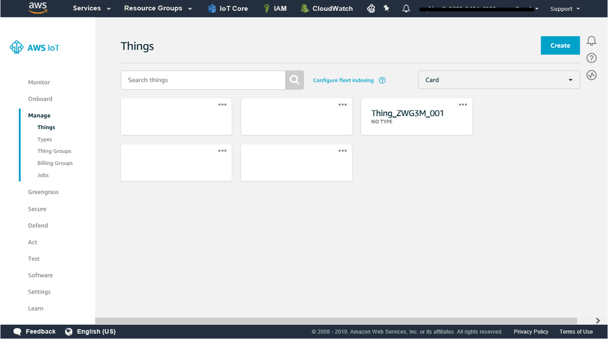
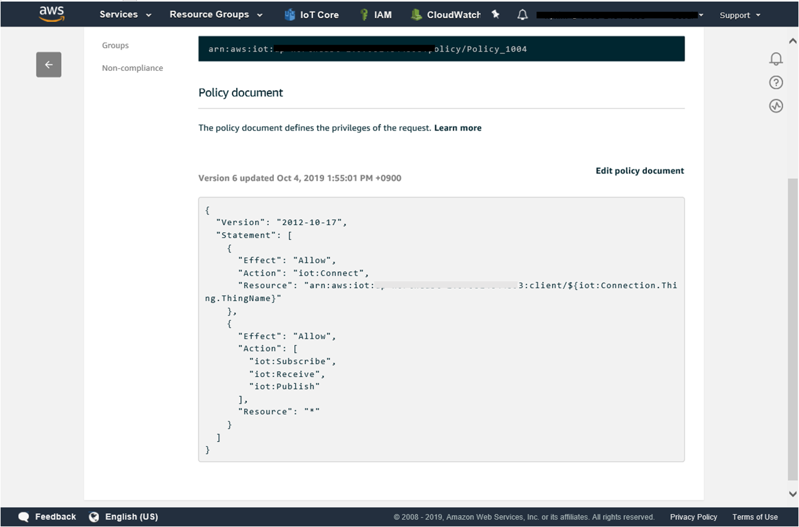
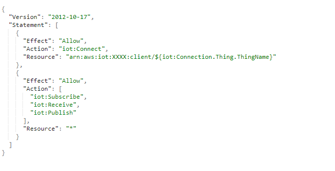
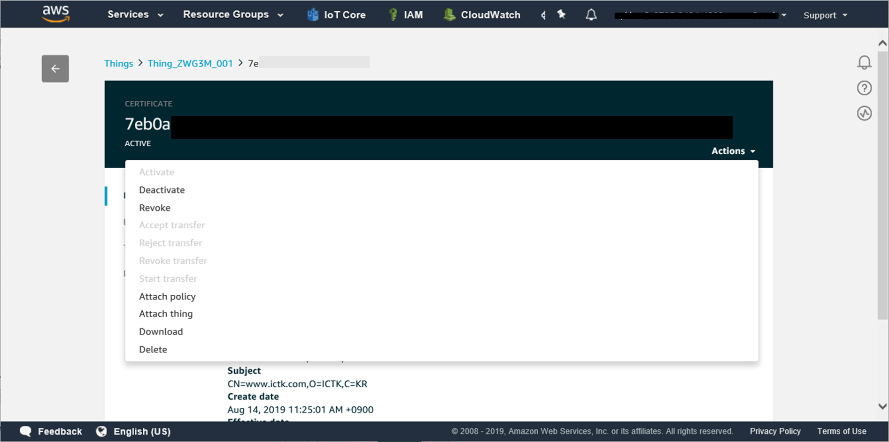
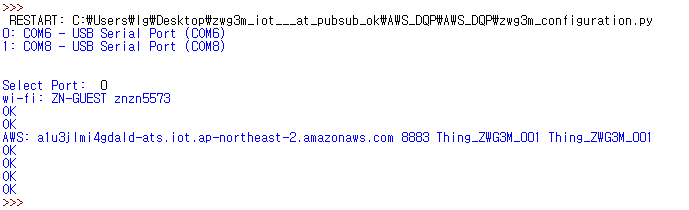
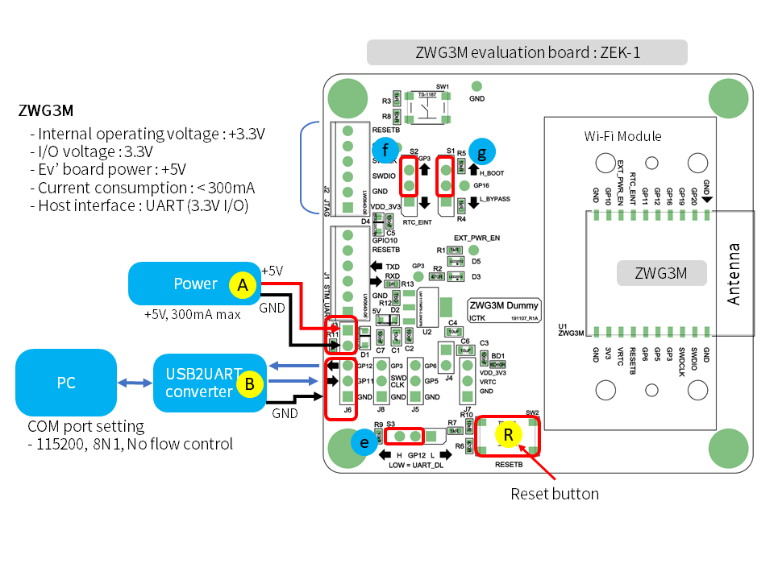

Getting Started with ZWG3M
Getting Started with AWS IoT
This integration enables you to build AWS IoT management system based on H/W root of trust for enhanced security: interact with Internet of Things, collect and process telemetry from devices or control devices remotely while protecting sensitive information in hardware format. Uplink and downlink messages are available on AWS IOT MQTT, allowing you to leverage Amazon services such as storing messages in DynamoDB , invoke Lambda functions and many more.
* Implemeataion is based on MQTT version 3.1.1 and TLS 1.2 with
ECDHE_ECDSA_WITH_AES_128_GCM_SHA256 ciphersuite.
* private key and certificates are encrptyed in HW-based security chip, supports enhacned
secured working structure.
- Log in to the AWS Management Console AWS Management
Console
- Choose
 IoT Core
service
IoT Core
service
- In the left navigation panel, click on Manage/Things

- Click on create button and add your device to the thing registery
- On the Certificate page, choose Use my certificate.

- Select or register CA for your own certificate to register
- Upload a device certificate : the one installed in ZWG3M

- Choose Polices under Secure menu
- Click on the create button and defines a set of policy actions

Users can define their own policy (ex. control clients or limit messages) by attach policies to Thing certificate.
Below shows policy commands which grants permission for a device to connect using its thing name as the client ID. The device must be registered with AWS IoT or the connection would not work.

- Go to the certificates page, click on the three dots of your certificate and attach the
selected policies to the thing certificate

- Download test example script from the ICTK GitHub Repository
- ZWG3M contains amazon root CA, client certificate and private key already installed in PUF chip. The basic certificate is installed, but can be renewed or added upon request.
- Run test script after connecting power and UART to ZWG3M module.(Please see the ZWG3M datasheet)
• Wi-Fi configuration command
AT+ WIFI_PW_STA=wifi _PW
• AWS configuration command
AT+AWS_PN=port_number
AT+AWS_TN=thing name
AT+AWS_CID=cleintID
Or user can download below python code to configure the device. Please modify wifi.json and aws.json files accroding to your settings.
zwg3m_configuration.py
wifi.json

aws.json

Run ZWG3M_Configuration
Available port will be shown in windows. Once user selects the port for the ZWG3M, it will be stored in json file name 'zwg3m.json'.
Configuration process

Users Wi-Fi and AWS settings that was written on json file will be configured. Please reset the ZWG3M after the configuration by pressing the reset button on the evaluation board.
